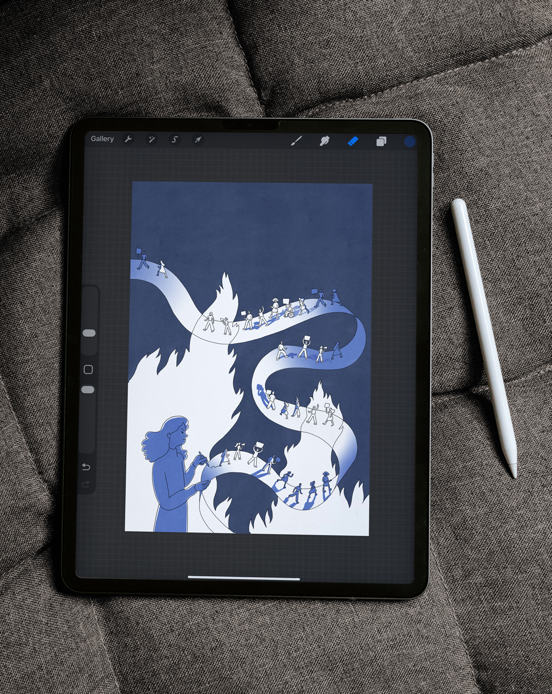
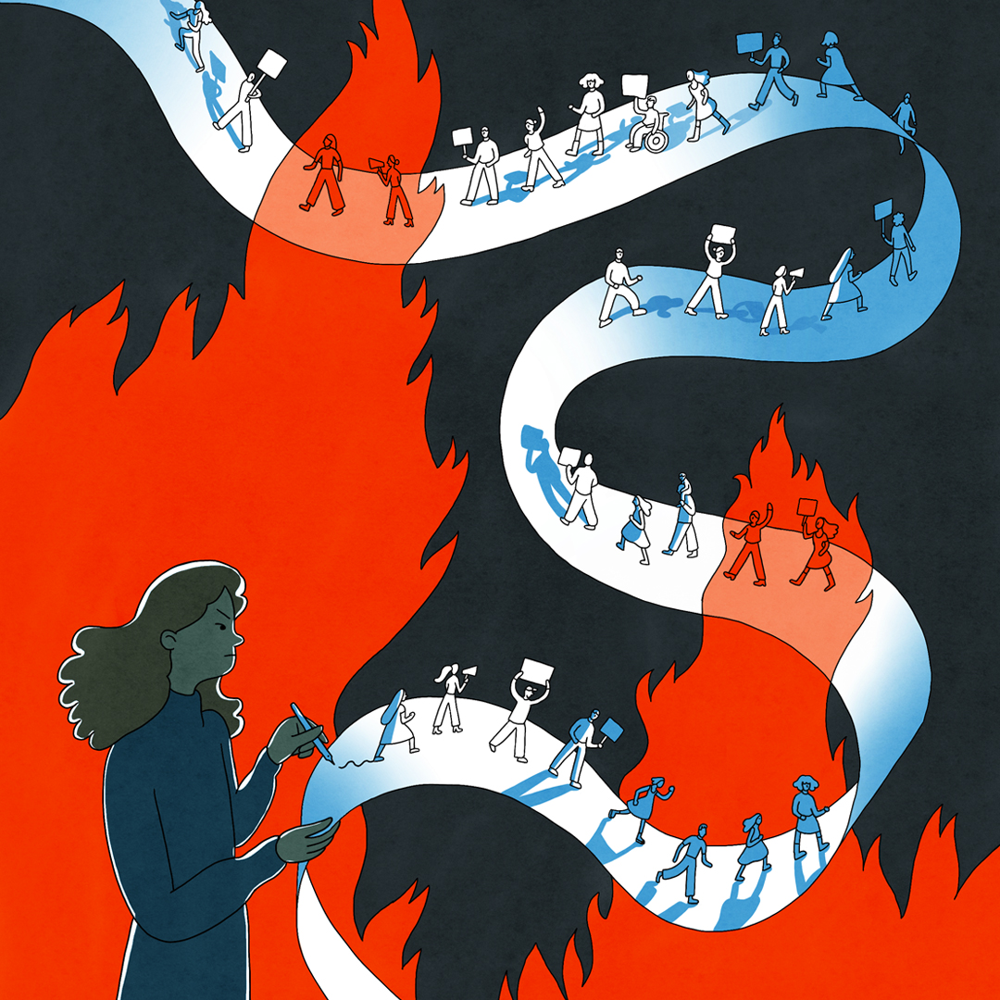

I illustrated the cover of literary magazine Vooys' June issue 'In de fik' (EN: on fire), on literature and activism.
The idea was to create an image that portrays literature as powerful, valuable and activist.
I chose to portray this as an author whose writing transforms into a protest march on swirling paper. I used a bold red color, high contrast and sharp shapes to reinforce the illustration's sense of strength and anger.
The idea was to create an image that portrays literature as powerful, valuable and activist.
I chose to portray this as an author whose writing transforms into a protest march on swirling paper. I used a bold red color, high contrast and sharp shapes to reinforce the illustration's sense of strength and anger.


Let’s work together!
Send me a creative brief along with your budget and project timeline.